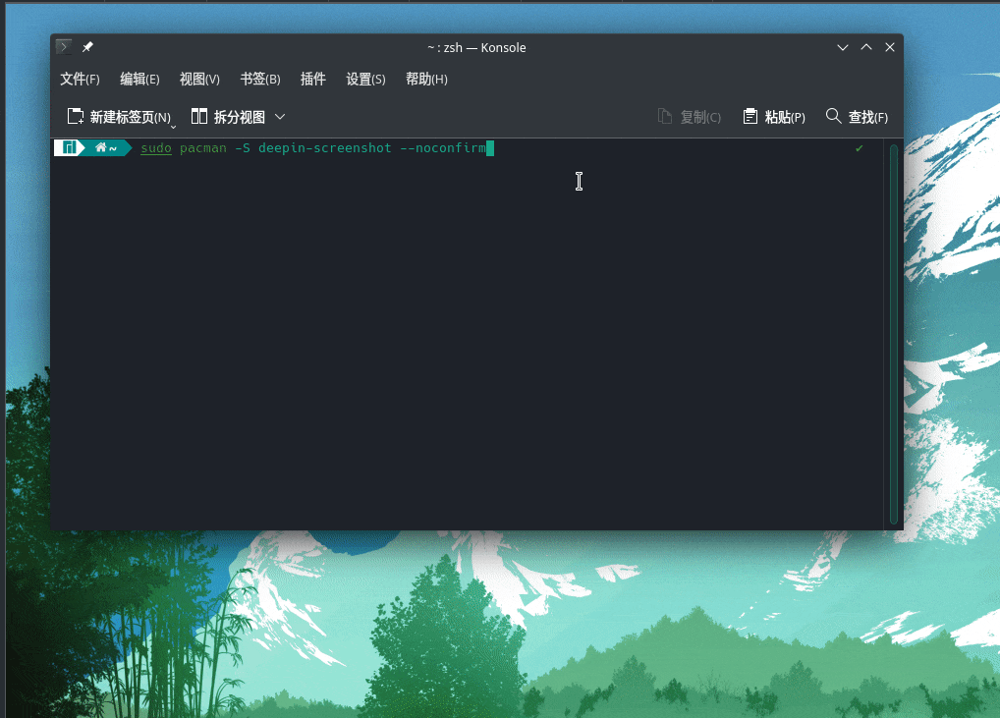
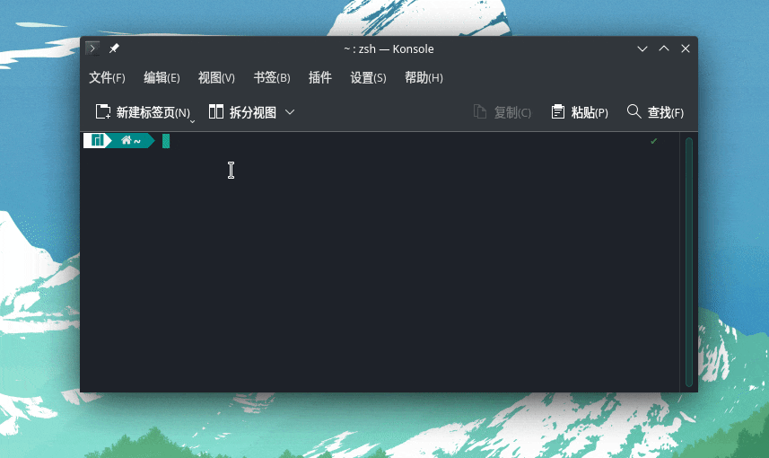

[Arch]-10-常用软件推荐
引言
Arch常用软件推荐，持续更新。
文章目录
- 0×1.深度截图
- 0×2.dolphin或nautilus快速打开文件夹
- 0×3.百度网盘
- 0×4.WPS中文版
- 0×5.you-get视频下载器
- 0×6.KeePassXC密码保存神器
- 0×7.vscode代码编辑器
- 0×8.vlc视频播放器
- 0×9.shadowsocks代理工具
- 0×10.命令行局部代理工具proxychains4
- 0×11.屏幕录像软件simplescreenrecorder
0×1.深度截图
deepin-screenshot是深度科技开发的一套截图软件，小巧强大：
#安装 qing@qingsword.com:~$ sudo pacman -S deepin-screenshot --noconfirm
配置：
安装好后，在系统设置中选择"快捷键">"自定义快捷键">"编辑">"新建">"全局">"命令"，选择"触发器"用键盘输入三个按键组合：CTRL+ALT+A，动作输入"deepin-screenshot -d /home/qing/Desktop/"，其中/home/qing/Desktop/是截图保存目录，请替换成你们自己的目录，配置完成后就能通过CTRL+ALT+A截图了，截图完成后，双击截图区域就能保存截图到指定的目录中，下图是配置演示：
0×2.dolphin或nautilus快速打开文件夹
有时候我们通过命令快速进入一个目录，需要用图形化界面打开这个目录，就可以用下面的命令：
#如果是参考本系列第二篇文章安装的桌面，默认是安装KDE桌面的dolphin文件管理器，直接可以使用，如果是gnome桌面有可能是安装了nautilus文件管理器，下面是使用dolphin文件管理器打开终端所在目录的实例 qing@qingsword.com:~$ dolphin .
下图是dolphin快速打开目录的演示：
0×3.百度网盘
百度网盘在Arch官方AUR源中有一个社区版本，直接可以通过yay安装：
qing@qingsword.com:~$ yay -S baidunetdisk-bin
0×4.WPS中文版
在AUR中有好几个版本的WPS，个人建议安装wps-office-cn这个版本，安装后就是全中文界面：
qing@qingsword.com:~$ yay -S wps-office-cn
除了WPS之外，还有几个比较好用的office办公套件如下，都有中文版，可以尝试：
#onlyoffice qing@qingsword.com:~$ sudo pacman -S onlyoffice-desktopeditors #libreoffice qing@qingsword.com:~$ sudo pacman -S libreoffice
0×5.you-get视频下载器
you-get可以用来解析网络视频并使用本地播放器播放，还可以下载大多数视频站的视频，是linux下不可多得的视频下载神器，已经被纳入了Arch官方源，安装十分简单：
目前支持大部分视频网站，但不是所有，you-get软件支持的视频站请参考官方说明：https://you-get.org/
you-get项目地址：https://github.com/soimort/you-get
#1.安装you-get qing@qingsword.com:~$ sudo pacman -S you-get #2.安装vlc播放器（方便后面演示使用这个播放器将网络视频加载到本地播放） qing@qingsword.com:~$ sudo pacman -S vlc #下载视频到指定（/home/qing/you-get-down）文件夹 #如果没有添加-o参数与保存路径，默认下载到终端当前目录 #请使用网络视频页面替换下面的"URL地址" #这里所说的网络视频页面是指，比如说你打开一个bilibili页面播放视频，这个页面地址复制替换下面那个URL地址 qing@qingsword.com:~$ you-get -o /home/qing/you-get-down "URL地址" #解析网络视频使用vlc播放器播放 qing@qingsword.com:~$ you-get -p vlc "URL地址"
0×6.KeePassXC密码保存神器
KeePassXC是一款现代、安全且开源的密码管理器，可存储和管理您最敏感的信息，所有信息都保存在本地.kdbx后缀的数据库文件中，可以在其中保存密码，文本，附件（附件可以包含各种种类的文件）。
KeePassXC项目地址：https://github.com/keepassxreboot/keepassxc
#安装KeePassXC qing@qingsword.com:~$ sudo pacman -S keepasscx --noconfirm
0×7.vscode代码编辑器
Arch的AUR仓库维护了一个官方二进制版本的vscode，功能齐全，十分好用。
#vscode安装 qing@qingsword.com:~$ yay -S visual-studio-code-bin
0×8.vlc视频播放器
#vlc安装 qing@qingsword.com:~$ sudo pacman -S vlc
0×9.shadowsocks代理工具
图形化界面，科学上网必备神器：
#shadowsocks-qt5安装 qing@qingsword.com:~$ sudo pacman -S shadowsocks-qt5
0×10.命令行局部代理工具proxychains4
有时候服务器没有安装图形界面，使用终端时，需要去下载一些被墙的资源，这个时候就能够用到proxychains4这款代理神器：
项目地址：https://github.com/rofl0r/proxychains-ng
#下面两种安装方式，随便选一种即可 #安装-[方法一] #proxychains4是AUR库中维护的软件，安装proxychains4 qing@qingsword.com:~$ git clone https://aur.archlinux.org/proxychains-ng-git.git qing@qingsword.com:~$ cd proxychains-ng-git qing@qingsword.com:~/proxychains-ng-git $ makepkg -si #安装-[方法二] qing@qingsword.com:~$ yay -S proxychains-ng-git #使用方法 #1.修改proxychains配置文件 qing@qingsword.com:~$ vim /etc/proxychains.conf #2.在末尾添加一行socks5代理指向我们自定义23333端口，这样的配置之后，用proxychains启动某程序，就会让这个程序的所有数据都发往本机的23333端口 socks5 127.0.0.1 23333 #3.然后使用ssh端口转发连接上自己的境外服务器，例如，本地开启一个23333端口，链接到233.3.3.5这台主机的随机端口，凡是本机发往23333端口的socks5数据，都会转发给233.3.3.5这台主机，这台主机代替我们去访问目标后，将数据再转发回给我们 qing@qingsword.com:~$ ssh -qTnNf -D 23333 root@233.3.3.5 #4.举例，使用proxychains4代理打开bash，可以打开任何命令行支持的软件，打开之后，这个软件就具备了科学上网的能力 qing@qingsword.com:~$ proxychains4 bash
0×11.屏幕录像软件simplescreenrecorder
simplescreenrecorder是一个用 C++/Qt5 编写的功能丰富的屏幕录像机，支持 X11 和 OpenGL。这个屏幕录像软件录制十分清晰，生成的目标文件可选MP4，在不损失清晰度的情况下，尽可能减小了输出文件的大小。
#安装 qing@qingsword.com:~$ sudo pacman -S simplescreenrecorder
持续更新中...